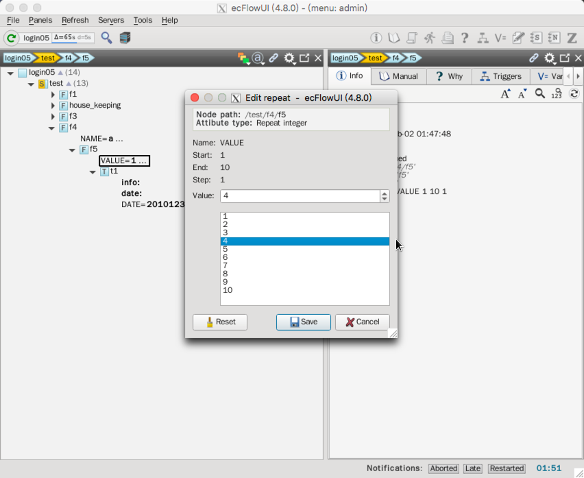

Repeat
有时需要重复多次运行某些 task 或 family，按某指定值循环。
ecFlow 提供 repeat 属性实现该功能。
repeat 可以按下列类型的序列循环：
- 字符串
- 整数
- 日期
整数和日期的序列由起始元素、终止元素和可选的间隔（默认为1）生成。 ecFlow 会创建一个与 repeat 名字对应的变量，可以在脚本或 trigger 表达式中使用。
Ecf脚本
创建一个新的脚本 $ECF_HOME/test/f4/f5/t1.ecf
%include <head.h>
ecflow_client --label=info "My name is %NAME%" "My value is %VALUE%" "My date is %DATE%"
# Note the use of repeat date generated variables DATE_YYYY, DATE_MM, DATE_DD, DATE_DOW to automatically reference year,month,day of the month,day of the week
# These can also be used in trigger expression.
ecflow_client --label=date "year:%DATE_YYYY% month:%DATE_MM% day of month:%DATE_DD% day of week:%DATE_DOW%"
sleep %SLEEP%
%include <tail.h>
Suite definition
在 suite definition 中添加 repeat，省略前面的定义。
Text
repeat 定义语法：
repeat ::= "repeat" >> repeat_type >> +nextline
repeat_type ::= repeat_date | repeat_day | repeat_month | repeat_year | repeat_integer | repeat_enumerated | repeat_string
repeat_day ::= "day" >> unsigned integer >> !ymd
repeat_month ::= "month" >> unsigned integer >> !ymd
repeat_year ::= "year" >> unsigned integer >> !ymd
repeat_integer ::= "integer" >> identifier >> integer >> " " >> integer >> " " >> integer
repeat_enumerated ::= "enumerated" >> identifier >> +identifier
repeat_string ::= "string" >> identifier >> +identifier
repeat_date ::= "date" >> identifier >> ymd >> ymd >> integer
下面以整型和日期为例说明。
# Definition of the suite test.
suite test
edit ECF_INCLUDE "$ECF_HOME"
edit ECF_HOME "$ECF_HOME"
family f4
edit SLEEP 2
repeat string NAME a b c d e f
family f5
repeat integer VALUE 1 10
task t1
repeat date DATE 20101230 20110105
label info ""
label date ""
endfamily
endfamily
endsuite
Python
import os
from pathlib import Path
from ecflow import Defs, Suite, Task, Family, Edit, Trigger, \
Event, Complete, Meter, Time, Day, Date, Cron, Label, \
RepeatString, RepeatInteger, RepeatDate
# ... skip ...
def create_family_f4():
return Family("f4",
Edit(SLEEP=2),
RepeatString("NAME", ["a", "b", "c", "d", "e", "f"]),
Family("f5",
RepeatInteger("VALUE", 1, 10),
Task("t1",
RepeatDate("DATE", 20101230, 20110105),
Label("info", ""),
Label("date", "")
)
)
)
print("Creating suite definition")
home = os.path.abspath(Path(Path(__file__).parent, "../../../build/course"))
defs = Defs(
Suite('test',
Edit(ECF_INCLUDE=home, ECF_HOME=home),
create_family_f1(),
create_family_house_keeping(),
create_family_f3(),
create_family_f4()))
print(defs)
print("Checking job creation: .ecf -> .job0")
print(defs.check_job_creation())
print("Saving definition to file 'test.def'")
defs.save_as_defs(str(Path(home, "test.def")))
# To restore the definition from file 'test.def' we can use:
# restored_defs = ecflow.Defs("test.def")
注意下面的对应关系
- 文本：
ecflow.RepeatString - 整数：
ecflow.RepeatInteger - 日期：
ecflow.RepeatDate
运行脚本：
$python test.py
Creating suite definition
# 4.8.0
suite test
edit ECF_INCLUDE '/g3/wangdp/project/study/ecflow/ecflow-tutorial-code/build/course'
edit ECF_HOME '/g3/wangdp/project/study/ecflow/ecflow-tutorial-code/build/course'
# ... skip ...
family f4
repeat string NAME "a" "b" "c" "d" "e" "f"
edit SLEEP '2'
family f5
repeat integer VALUE 1 10
task t1
repeat date DATE 20101230 20110105 1
label info ""
label date ""
endfamily
endfamily
endsuite
Checking job creation: .ecf -> .job0
Saving definition to file 'test.def'
Python API 说明
ecflow.RepeatDate 日期
RepeatDate(variable,start,end,delta)
string variable: The name of the repeat. The current date can referenced in
in trigger expressions using the variable name
int start: Start date, must have format: yyyymmdd
int end: End date, must have format: yyyymmdd
int delta: default = 1, Always in days. The increment used to update the date
示例
rep = RepeatDate("YMD", 20050130, 20050203 )
rep = RepeatDate("YMD", 20050130, 20050203, 2 )
ecflow.RepeatDay 天
RepeatDay(step)
int step: The step.
示例：
rep = RepeatDay( 1 )
ecflow.RepeatEnumerated 数组
RepeatEnumerated(variable,list)
string variable: The name of the repeat. The current enumeration index can be
referenced in trigger expressions using the variable name
vector list: The list of enumerations
示例：
rep = RepeatEnumerated("COLOR", [ 'red', 'green', 'blue' ] )
ecflow.RepeatInteger 整数
RepeatInteger(variable,start,end,step)
string variable: The name of the repeat. The current integer value can be
referenced in trigger expressions using the variable name
int start: Start integer value
int end: End end integer value
int step: Default = 1, The step amount
示例
rep = RepeatInteger("HOUR", 6, 24, 6 )
ecflow.RepeatString 字符串
RepeatString(variable,list)
string variable: The name of the repeat. The current index of the string list can be
referenced in trigger expressions using the variable name
vector list: The list of enumerations
示例：
rep = RepeatString("COLOR", [ 'red', 'green', 'blue' ] )
任务
- 完成修改
替换 suite definition

/test/f4/f5/t1将会运行多少次？尝试在 ecflow_ui 中修改某个 repeat 的值。
